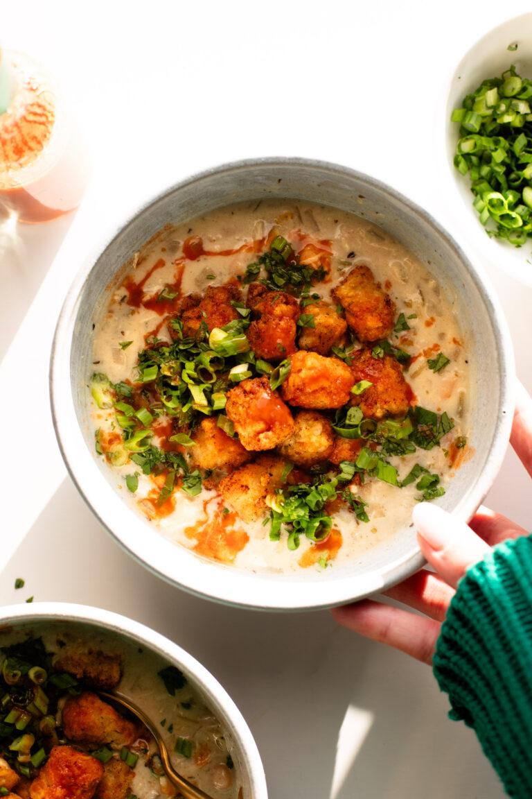

This White Chicken Chili is THE BOMB. Chicken, white beans, and green chiles folded up in a creamy soup blanket and topped with golden, crispity seasoned tots, cilantro, green onion, and hot sauce. WOW. Top combo.
You need to be putting tator tots on your white chicken chili. That is the beginning and the end of this persuasive essay. White chicken chili is already a top ten food for me, and this one is weeknight easy, just a little spicy, extra creamy, and uncluttered. But when you take the chicken, white beans, green chiles and cumin and oregano wrapped in a blanket of creamy soup and level it up with the crispity golden bite of a perfectly seasoned tot? Oof. Wow. This is peak winter food. I’ve always been extremely loyal to Sarah’s White Chicken Chili – it’s one of my favorite soups and one that many of you have told me has won you all kinds of awards at chili cookoffs. So the bar is high for white chicken chili here on POY. But this new white chicken chili has earned its place on the site. It’s easier, there’s just less going on with it, and it’s a bit thicker and maybe even a bit more comfort-food cozy. White chicken chili with tots. That’s my thesis. The end!
Looking for a chicken salad recipe that's a cut above the rest? Well, lend me your attention, because this one is worth the time and effort. Start by marinating succulent chicken breasts in a medley of herbs and spices, infusing them with flavor. Whether you choose to grill or bake, the result is tender, golden perfection. Meanwhile, cook up a batch of quinoa—nutrient-packed and hearty, it adds a delightful length to your salad experience. Assemble a vibrant array of ingredients, from cherry tomatoes to Kalamata olives, creating a symphony of colors and textures. Toss in crumbled feta, the unsung hero of salads, and let fresh parsley add its finishing touch. Drizzle on a zesty dressing, a fusion of olive oil, red wine vinegar, Dijon mustard, and garlic. Chill, allowing the flavors to mingle, and when you serve this masterpiece, you're not just tossing a salad; you're presenting a culinary symphony that elevates every bite to a delightful crescendo.
Marinate the Chicken: Start by marinating the chicken breasts in your favorite blend of herbs and spices. I recommend a mix of oregano, thyme, garlic powder, salt, and pepper. Let it marinate for at least 30 minutes to allow the flavors to penetrate. Grill or Bake the Chicken: Cook the marinated chicken breasts either on a grill or in the oven until they are golden brown and cooked through. Once done, let them rest for a few minutes before slicing them into thin strips. Prepare the Quinoa: While the chicken is cooking, prepare the quinoa according to the package instructions. Quinoa adds a nutritious and hearty element to the salad, giving it a satisfying length. Assemble the Salad: In a large salad bowl, combine the cooked quinoa, sliced chicken, cherry tomatoes, diced cucumber, chopped red bell pepper, finely sliced red onion, crumbled feta cheese, Kalamata olives, and fresh parsley. Mix everything gently to distribute the flavors evenly. Whisk Together the Dressing: In a small bowl, whisk together the olive oil, red wine vinegar, Dijon mustard, minced garlic, salt, and pepper. Pour the dressing over the salad and toss until all the ingredients are coated in the delicious dressing. Chill and Serve: Allow the salad to chill in the refrigerator for at least 30 minutes to let the flavors meld together. When ready to serve, give it a final toss and garnish with extra feta and parsley for a burst of freshness.